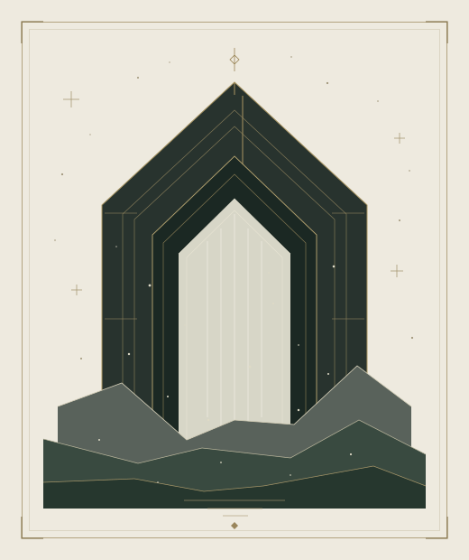

CONTENTS / 全篇书目
循页而行
第一百六十九回第一百九十三回
共 25 回
169未熄之门
170迟滞者
171血灯不灭
172被借走的眼睛
173石柱上的微光
174归路
175封在冰里的名字
176三封未寄出的信
177永生者的女儿
178隐山宫的残卷
179来自外界的雾
180被替换的人
181更高的堤坝
182冰帝的旧约
183没有名字的王座
184归来的声音
185最后一封红讯
186雾中的城
187看不见的战场
188黑血的尽头
189白银囚笼
190谁可以离开
191最后一把魂器
192无爵之人
193福泽的春天
书目里暂未找到这一页。
试试别的回数或标题，或选择“全部篇目”。
BEYOND THE LAST PAGE
页外之页
故事的安排，与落笔的方式。